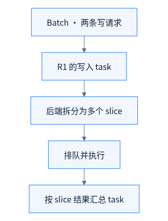

继续用前几篇的 4 MiB 对象 K。这次单独看 Transfer Engine（TE），假设调用方把 K 发往 R1、R2 的两条写请求放进同一个 batch，两个目标由不同的传输后端处理。这个例子用于观察 TE 的分组提交，Store 普通 Put 有独立的副本提交流程。Put 提交流程
假设 R1 对应的后端先接受请求，R2 对应的后端随后报错。调用方已经看见提交失败，但 R1 那条写可能还在队列里，网卡也可能正在读 K 的源缓冲区。
从 batch 看到 slice
调用方用 batch 管理一组工作。在这个普通提交示例里，两条写请求各对应一个 task。后端可以再把每个 task 拆成多个 slice，拆分方式和片段大小由后端决定。

图注：只展开 R1 这一条 task。R2 对应另一条 task，两个 task 有各自的进度。
提交前拒绝与部分提交
在本文的版本里，MultiTransport::submitTransfer 先检查普通提交的批次容量，再为所有请求选 transport。容量不够或目标段无法选出 transport，此次调用会在向后端分派前返回。若这个 BatchID 之前已经装入任务，还要继续管理那些任务。
进入分派阶段后，MultiTransport 按 transport 分组调用后端。某一组返回错误，它仍会尝试剩余分组，最后返回非 OK 状态。分组遍历次序也无法由请求顺序推出。
回到 K。只要发往 R1 的请求已被接受，错误返回就没有撤销这条写。即使 R2 先报错，R1 也可能在之后被分派。要判断已经接受了哪些工作，需要看 task 状态和后端记录。整批直接重交可能与仍在进行的写重叠。
超时、失败与完成各能证明什么
getTransferStatus 有两层结果。接口返回的 Status::OK 表示查询成功，task 的传输结果要看输出字段里的状态。以此版本的 RDMA 路径为例：
WAITING：task 的 slice 还没全部收尾。若启用 slice 超时，查询可以把一项仍在等待的工作报告为TIMEOUT。这段检查只改查询结果，未取消设备操作。FAILED：对 RDMA task，所有 slice 已记账且至少一项失败时，查询会报告失败并设置完成标记。此前已完成的 slice 可能已把部分字节写到远端。COMPLETED：在这里表示 task 的 slice 全部成功。若写入服务于 Store Put，仍需 Store 提交流程才会让副本可查询。
getBatchTransferStatus 遇到某个 task 失败或超时就可能报告整批 FAILED，并提前返回。它给出的是整批传输结果。收尾时要逐项查看，避免后面尚未检查到的 task 被误当成已经结束。
什么时候可以回收 batch
错误返回后，保留 BatchID、原始请求向量和传输缓冲区。当前路径下，task 持有指向原向量元素的指针，后端可能继续访问缓冲区。因此收尾前要保持描述有效、缓冲区仍已注册，也别将这块内存交给下一次写入。
继续用逐项状态查询和后端的完成机制推进收尾，再调用 freeBatchID。本文版本的实现逐项检查 is_finished。只要有一项还没完成，就返回 BatchBusy 并保留 batch；返回 OK 时才删除批次描述。之后按各自所有权解除注册或复用缓冲区。
如果状态一直无法推进，要按所用 transport 的退出与清理机制排查。仅凭查询超时，无法证明设备已经停止访问内存。
总结
对于示意对象 K，R2 的提交错误可以先返回，而 R1 的写仍在执行。排障时先定位失败发生在分派前还是分派中，再看每个 task 如何收尾。TIMEOUT 记录等待超时，freeBatchID 的结果才用于确认批次资源何时回收。
源码延伸 版本基线为 v0.3.13.post1。